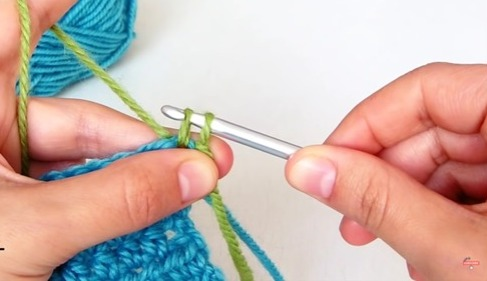
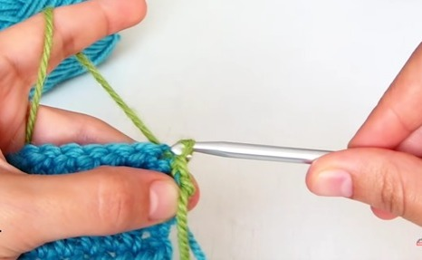
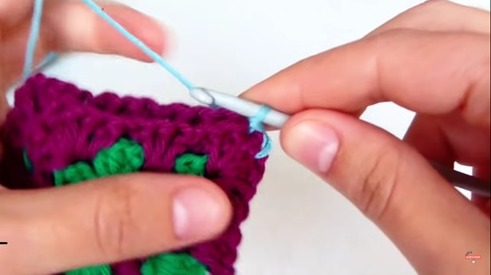

Aprendamos a tejer: Punto Deslizado
Vamos a aprender a hacer el punto deslizado, punto raso o punto enano. Como su nombre lo indica es un punto que nos ayuda a deslizarnos en el tejido, aunque también se usa para coser prendas o coser dos piezas de tejido. Vamos a verlo:

Para empezar el punto deslizado podemos (o no) hacer una cadena para separarme un poco de la fila anterior. Vamos a girar nuestro trabajo y directamente en la primera cadena o punto que tengamos vamos a empezar con nuestro punto deslizado. Vamos a insertar el ganchillo en punto, enganchamos el hilo, salimos y nos quedan dos aritos así:
El primer arito lo vamos a pasar a través del segundo (por dentro). Repetimos: insertamos, enganchamos hilo, salimos y el primer arito lo pasamos por el segundo:
Es un punto bastante invisible, se queda ahí pegadito al tejido, por eso nos sirve para deslizarnos sin altura, para deslizarnos en nuestro tejido en partes donde no queremos que se vea y también nos sirve para coser varias piezas:
así seguimos por todo el borde de nuestro proyecto depende de lo que estemos cosiendo o tejiendo.